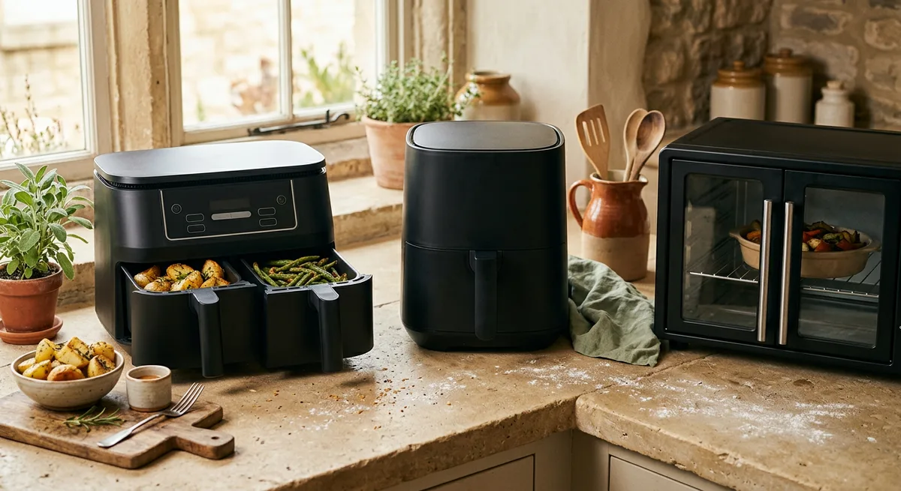
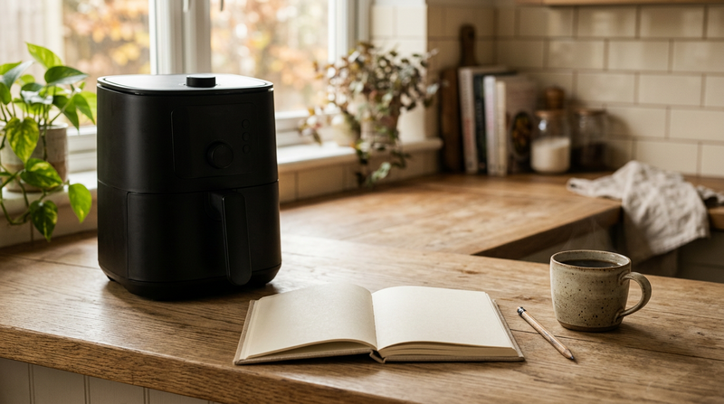
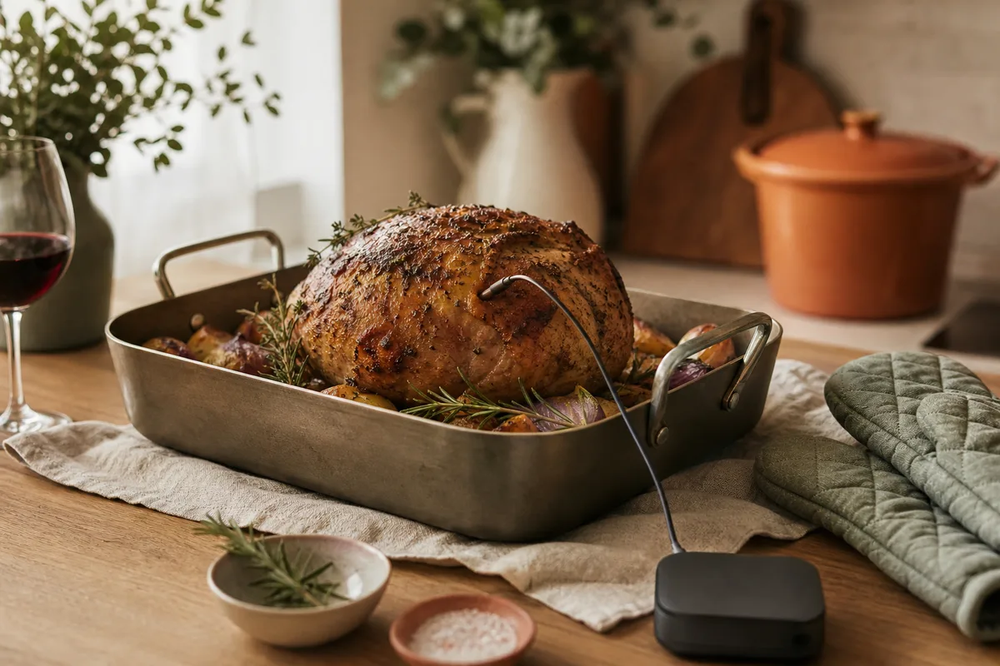

Will it fit? Four measurements to take before an air fryer arrives
One listing says 13.4 inches deep, another says 16.9 inches and 26.5 pounds. Take these four measurements first — the returns desk is not a plan.
Every guide here is question-shaped on purpose. Nobody shops at 9pm for “brand X review”; they search the thing they are actually unsure about — does a dual basket beat one big one, how many quarts feed a family of four, whether a probe can live in the oven.
One listing says 13.4 inches deep, another says 16.9 inches and 26.5 pounds. Take these four measurements first — the returns desk is not a plan.

Two baskets that finish together vs. one big oven cavity. Compare capacity, footprint, and cleanup across the three air fryers in the shop.

A dual-basket drawer, a single XL drawer and a French-door oven cavity are three different machines. Here is the one question that decides which shape you should be shopping, measured against the three listings in this shop.
Buying your first air fryer? Six checks that come straight off the listing — capacity, footprint, weight, temperature range, power, dishwasher-safe parts — so you do not regret it in a month.
Two hours, four days, 165°F: the USDA numbers that decide whether tomorrow's plate is worth reheating — and where an air fryer fits, and where it does not.
Air fryer, convection oven, toaster oven — the names overlap. Here is what each listing in the shop actually says it does, and the one question that decides which shape you need.
Quarts are a volume, not a serving count. Here is what the listings in the shop actually state about capacity, and the honest answer to how much food a 6-quart basket really holds.
Capacity shape, temperature range, wattage, footprint, weight, cleanup: the six fields worth comparing across the three air fryers in the shop — and the marketing words that carry no information.
Quarts mean different things. Measure the food, not the marketing — a practical capacity checklist for the three air fryers in the shop.
Dishwasher-safe parts, windows, and the inches your counter actually has. A practical cleanup and footprint guide for basket vs. oven-style fryers.
24 functions sound great — until you ask which ones you will use weekly. Questions for oven-style fryers and wireless thermometers.

A pre-click checklist for deal season: which size is on the page, what the listing contradicts about itself, and why this site shows no deal price at all.
Browse all Meat Thermometers →

A listing can claim half a degree. Federal guidance says most food thermometers read accurate within 2 to 4 degrees. Here is the 30-second ice test that tells you which one you own.

One thermometer you spot-check with, and one that stays in the food and tells you when to stop. The difference is not luxury — it is what you can walk away from.

A handheld probe answers one question in a second. A wireless probe set answers the same question for three hours without you opening the oven. Both are measured against USDA's published temperature targets, and the difference is the length of your cook.

A bird, a roast and four hours of oven. What to decide about probes, alarms, and cable heat limits before you buy anything for the holiday cook.

USDA gives the number (165°F for all poultry) and the three places to check it. Which thermometer style gets you that reading — and where each one goes — decides the rest.
One JSON file in data/guides/ plus python3 scripts/new_guide.py && python3 scripts/build_site.py publishes a guide: this index, the front-page rail, the sitemap, the RSS feed, the search index and the About page’s cluster counts all read the same source — no hand-maintained list anywhere.
Suggest the next topic → Questions we still need answered →
One email when a new guide publishes.
There is no newsletter running yet, so this control is switched off on purpose: it transmits nothing, stores your address nowhere, and cannot submit a form. A subscription flow needs a provider, a consent record and a retention period first — those are open questions on the questions page, and the disclosure states exactly what this site does and does not collect.